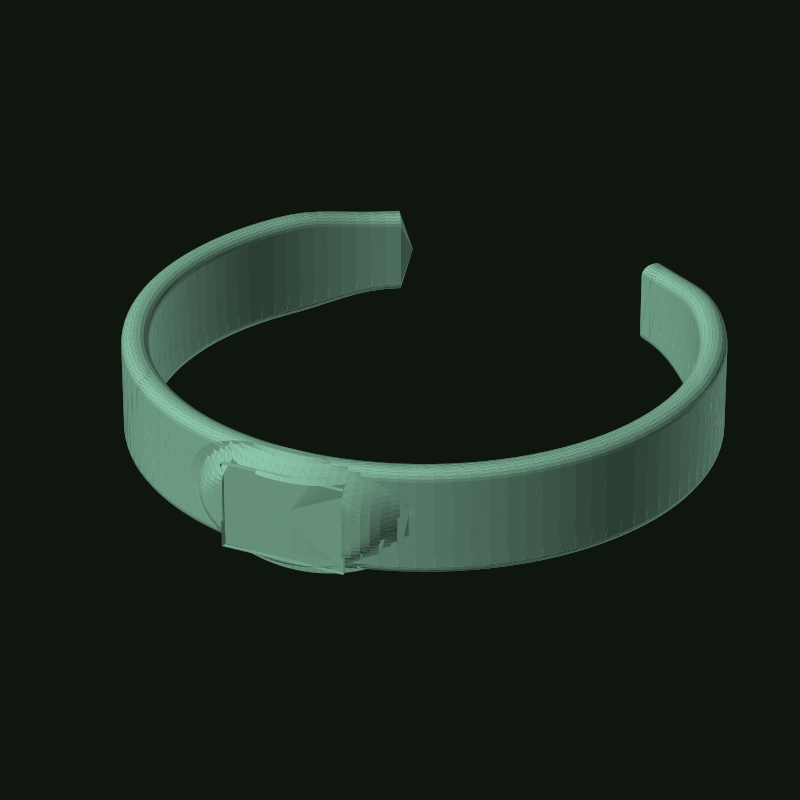

PROTOTIPO DE LA EEST N.º 1
Tu información,
a tiempo.
Una pulsera para consultar una ficha de emergencia. Escaneá el QR para abrirla en la web o acercá el celular al mismo lugar para leer el chip NFC sin internet.
- Material
- TPU flexible
- Lectura
- QR + NFC
- Conexión
- NFC sin internet
Visor 3D
Armada
Arrastrá para girar · Usá la rueda o dos dedos para acercar

El visor 3D no está disponible en este navegador. Podés consultar las piezas en la ficha técnica.
100 %
03 · DEMOSTRACIÓN NFC
Una lectura
Una lectura
en la guardia.
La paciente lleva la pulsera en la muñeca. Acercá el dorso del celular al cuadrado del QR y mantenelo ahí un instante: la antena lee el chip que está debajo. Después, tocá el aviso en la pantalla.
Simulación con datos ficticios. No usa el NFC de tu equipo.
- 01 Acercar
- 02 Mantener cerca
- 03 Abrir el aviso
Deslizá para acercarlo o alejarlo.
NFC activado Sin internet
Listo para leer
Acercá el celular al módulo de la pulsera.
Lector NFC Ahora
Etiqueta de Safe.Ride
Datos de emergencia leídos de la pulsera.
Leído desde la pulsera
Datos esenciales
- Grupo sanguíneo
- O positivo
- Alergias
- Penicilina
- Contacto de emergencia
- Familiar de ejemplo
Ficha ficticia · No incluye un número real.
Dos lecturas, una pulsera
Compararlas en el simulador- QR Ficha web
- Escaneá el código con la cámara para consultar la ficha completa con internet.
- NFC Datos esenciales
- Acercá un celular compatible al QR para leer los datos guardados en el chip, sin internet.